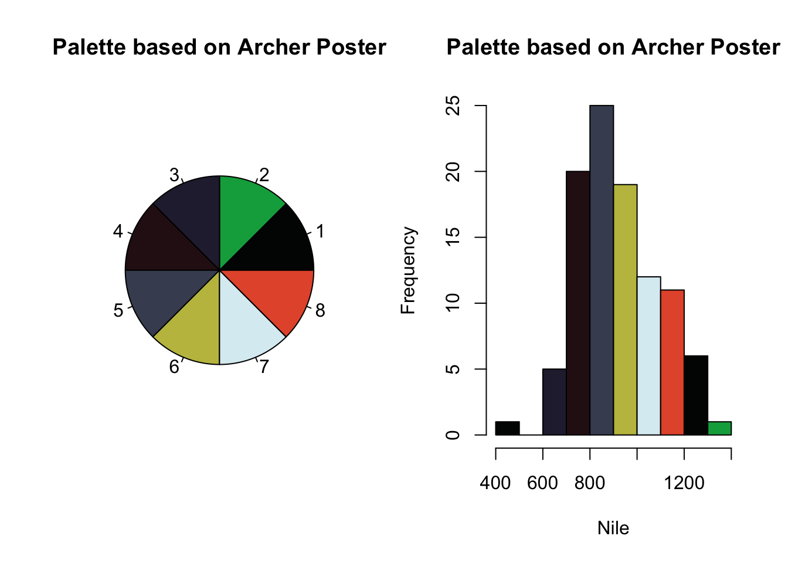
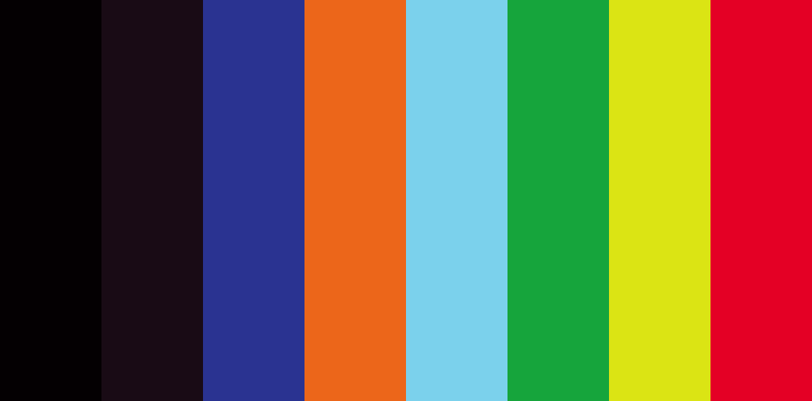
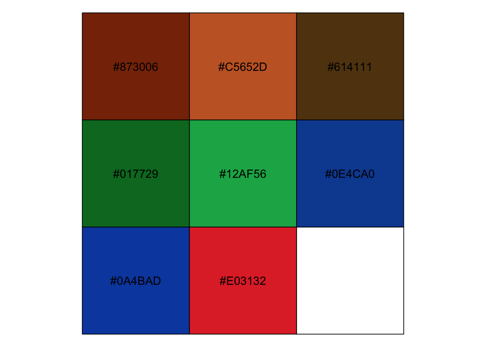
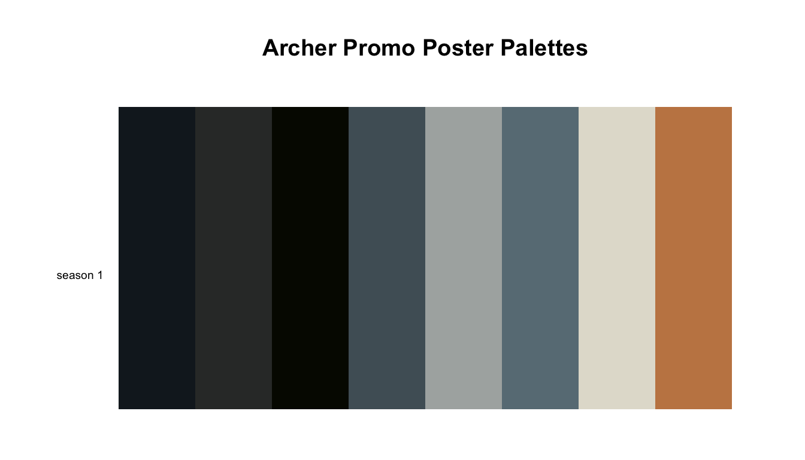
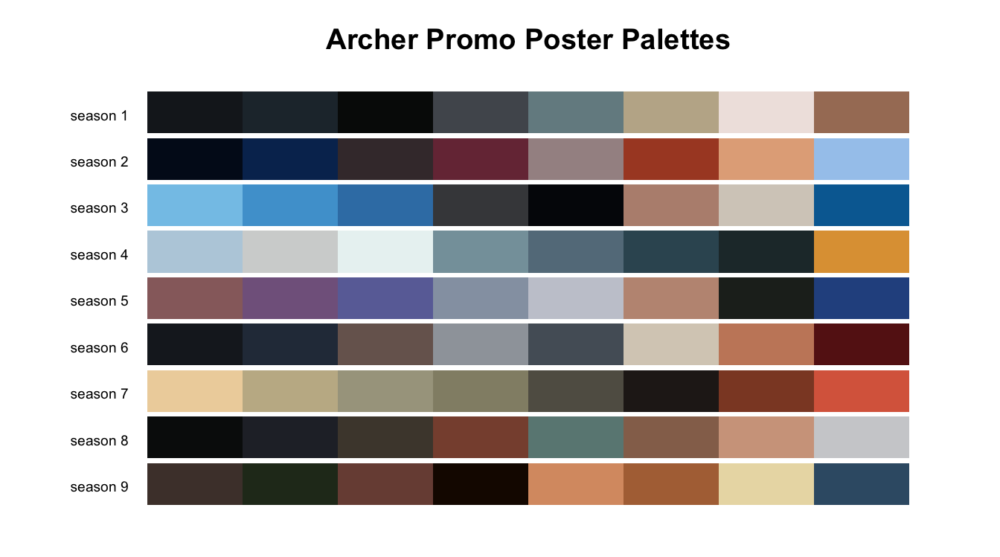

Jo-fai Chow’s rPlotter is described as “[w]rapper functions that make plotting in R a lot easier for beginners.” I came upon it in its best and highest form, though, as “another” colour-palette generator for R.1 To be specific, I was drawn in by Palette Tarantino, which you can catch the code for in Chow’s post, Towards (Yet) Another R Colour Palette Generator.

rPlotter-generated colour palettes for: Reservoir Dogs, Pulp Fiction, Kill Bill, and Django Unchained
Being, well, me—my first thought was 🤔 How could I involve Archer in this? So, let’s Archify things… (Yes, his name’s a verb, you’ll just have to accept that fact!)

I’m a verb now, Lana. Deal with it!
library(tidyverse)
# devtools::install_github("woobe/rPlotter")
library(rPlotter)rPlotter::extract_colours()
I’ll follow the example from the rPlotter README for extracting colours. I retrieved the Archer posters for each season from the Archer wiki (duh), which I’ll use as my source images.
Before we get into the season-by-season posters, let’s take a peek at what I consider to be the “generic” Archer poster of sorts.

Archer poster
pal_a <- extract_colours("https://i.imgur.com/FyEALqr.jpg", num_col = 8)
par(mfrow = c(1,2))
pie(rep(1, 8), col = pal_a, main = "Palette based on Archer Poster")
hist(Nile, breaks = 8, col = pal_a, main = "Palette based on Archer Poster")
I’m not loving this palette. I mean, I understand why it’s happening—the suit, the background, the fire, but let’s take another palette generator for a spin.
quickpalette::url_palette()
Emil Hvitfeldt’s quickpalette package “provide[s] a few tools to quickly acquire new color palettes to be used in R.” We’ll pair it with the pals package for easy layout generation.
# devtools::install_github("EmilHvitfeldt/quickpalette")
library(quickpalette)
library(pals)We’ll use the same image, so we can get a “fair” comparison between the packages.
url <- "https://i.imgur.com/FyEALqr.jpg"
quickpalette::url_palette(url = url, n_clusters = 8) %>%
pals::pal.bands()Definitely getting a brighter vibe with this one. That’s a lot of whitespace. Let’s see if we can tighten things up with Jeroen Ooms’ magick package.
We’ll need to read the image generated in the last chunk back in.
library(magick)
image_read("https://raw.githubusercontent.com/rbind/waxwings/rplotter/static/post/2018-07-18-palettes-archer-poster-edition_files/figure-html/quickpal-1.png") %>%
image_trim()
paletter::create_palette()
Let’s try one more, Andrea Cirillo’s paletter. Unlike the other two, paletter prefers an image path, so I’ll use a local copy of the same image. There’s a great post describing the math behind the methods in this package, which you can check out here.
# devtools::install_github("AndreaCirilloAC/paletter")
library(paletter)You have to specify a type_of_variable argument, so I’ll go with "categorical".
image_path <- here::here("static", "img", "ArcherPosters", "archer-poster.jpg")
colours_vector <- create_palette(image_path,
number_of_colors = 8,
type_of_variable = "categorical")
#> decomposing image into RGB...
#> applying kmeans to the image...
#> optimising palette...
#> Joining, by = "id"
#> Joining, by = "id"
#> optimising level of divergence between colours
Though I like the layout of the output, paletter takes significantly longer than the other two packages. I also don’t know why it outputs the palette twice. So…🤷
A palette for all seasons
pal_s1 <- quickpalette::url_palette(url = "https://i.imgur.com/14V7d86.jpg", n_clusters = 8)
pal_s1 %>%
pals::pal.bands(labels = "season 1", main = "Archer Promo Poster Palettes")
Based on the code chunk above, I’m beginning to suspect that there might be a lot of copying and pasting involved, which means it’s probably time for (you guessed it) a function. To make life even easier on myself, I’m going to use copies of the images, which I’ve conveniently suffixed with _season*.jpg.
I can use a combination of the here and glue packages to build paths to the images.
season_num <- 2
here::here("static", "img", "ArcherPosters", glue::glue("ArcherPromoPoster_season{season_num}.jpg"))
#> [1] "/Users/maraaverick/waxwings/static/img/ArcherPosters/ArcherPromoPoster_season2.jpg"But, as is suggested by the name, it turns out that quickpalette::url_palette() wants a URL, and not a local file. Due to an acute attack of laziness, I popped all of the posters in a GitHub repo.
season_num <- 2
poster_url <- glue::glue("https://raw.githubusercontent.com/batpigandme/mstash/master/images/ArcherPosters/ArcherPromoPoster_season{season_num}.png")
poster_url
#> https://raw.githubusercontent.com/batpigandme/mstash/master/images/ArcherPosters/ArcherPromoPoster_season2.pngmake_season_pal <- function(season_num) {
s_num <- season_num
poster_url <- glue::glue("https://raw.githubusercontent.com/batpigandme/mstash/master/images/ArcherPosters/ArcherPromoPoster_season{s_num}.png")
pal_name <- glue::glue("pal_s{s_num}")
pal_cols <- quickpalette::url_palette(url = poster_url, n_clusters = 8)
}Let’s see those palettes…
pals::pal.bands(pal_s1, pal_s2, pal_s3, pal_s4, pal_s5, pal_s6, pal_s7, pal_s8, pal_s9,
labels = c("season 1", "season 2", "season 3", "season 4", "season 5", "season 6", "season 7", "season 8", "season 9"),
main = "Archer Promo Poster Palettes")
Not bad! For comparison, here’s the set generated when I sent the same posters into the Adobe Color Wheel tool online (which, I assume, is more professional).

Archer promo-poster palettes generated with Adobe Color Wheel
Author’s words, not mine—I would never disparrage the importance of colour-palette generators.↩